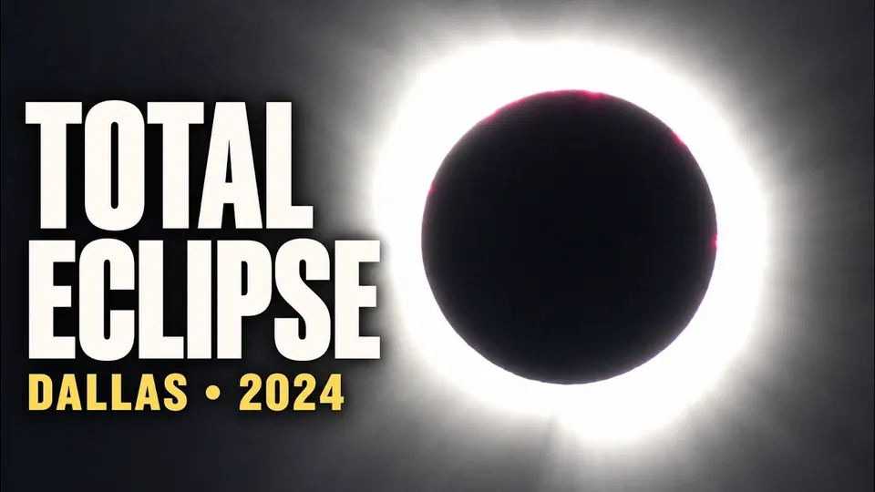

White Rock Lake
Dallas, Texas

A journey
15 films and shorts from places named in the Dallas titles.
The places
15 films and shorts from places named in the Dallas titles.
The map marks the places that can be located from those titles; it is not a record of one continuous drive.
The map loads when you scroll to it. The stops are listed below.
Map data © OpenStreetMap
Step through the stops
Dallas, Texas
Dallas, Texas
Along the way
Dallas, Texas, United States
Listed as: Celebration
Southern / American
4503 West Lovers Lane, Dallas, TX 75209
Open
Dallas, Texas, United States
Burgers
Open
Several locations in Dallas.
Dallas, Texas, United States
American
11909 Preston Road, Suite 1418, Dallas, TX 75230
Open
Dallas, Texas, United States
Listed as: Front Room
American
6101 Hillcrest Avenue, Dallas, TX 75205
Open
Dallas, Texas, United States
Listed as: Mariano’s Mexican
Mexican / Tex-Mex
Open
Several locations in Dallas.
Dallas, Texas, United States
Breakfast / cafe
Open
Several locations in Dallas.
Dallas, Texas, United States
Listed as: Ephesus
Mediterranean
10455 North Central Expressway, Suite 118, Dallas, TX 75231
Open
Dallas, Texas, United States
Listed as: Mexican Sugar
Mexican
Open
Several locations in Dallas.
Dallas, Texas, United States
American / Texas
Open
Several locations in Dallas.
Dallas, Texas, United States
American / brunch
3230 Knox Street, Suite 140, Dallas, TX 75205
Open
Dallas, Texas, United States
Listed as: Ellen’s
Southern / breakfast and brunch
Open
Several locations in Dallas.
Dallas, Texas, United States
Italian
Open
Several locations in Dallas.
Dallas, Texas, United States
American / seafood
Open
Several locations in Dallas.
Dallas, Texas, United States
Steakhouse
6726 Shady Brook Lane, Dallas, TX 75231
Open
Addison, Texas, United States
Listed as: May Dragon
Chinese
4848 Belt Line Road, Addison, TX 75001
Open
Arlington, Texas, United States
Listed as: Tipsy Oak
American
301 East Front Street, Arlington, TX 76011
Open
Richardson, Texas, United States
Listed as: Aboca’s Italian
Italian
100 South Central Expressway, Suite 63, Richardson, TX 75080
Open
Addison, Texas, United States
Listed as: Nate’s Seafood and Steakhouse
Seafood / steakhouse
14951 Midway Road, Addison, TX 75001
Open
Plano, Texas, United States
Steakhouse
4900 West Park Boulevard, Plano, TX 75093
Open
Denton, Texas, United States
Listed as: Frilly’s
Seafood
1925 Denison Street, Denton, TX 76201
Open
Denton, Texas, United States
Listed as: Roosters Roadhouse
Barbecue
113 Industrial Street, Denton, TX 76201
Open
Flower Mound, Texas, United States
Listed as: Hanaya Hibachi
Japanese / hibachi and sushi
901 Long Prairie Road #108, Flower Mound, TX 75022
Open
Fort Worth, Texas, United States
Listed as: Lucille’s
American
4700 Camp Bowie Boulevard, Fort Worth, TX 76107
Open
Fort Worth, Texas, United States
Listed as: The Post River East
American / bar
2736 West 6th Street, Fort Worth, TX 76107
Open
Now at 2736 West 6th Street (the former Lola's Saloon); previously at River East on Race Street.
Fort Worth, Texas, United States
Texas / steakhouse
Open
Several locations in Fort Worth.
Fort Worth, Texas, United States
Listed as: Deluca Pizza
Pizza
Open
Several locations in Fort Worth.
Fort Worth, Texas, United States
Listed as: Cattlemen’s
Steakhouse
2458 North Main Street, Fort Worth, TX 76164
Open
Frisco, Texas, United States
Listed as: Great Wall Super Buffett
Chinese / buffet
2750 Preston Road, Frisco, TX 75034
Open
Grapevine, Texas, United States
Listed as: Farina's
American / cafe
Open
Several locations in Grapevine.
Grapevine, Texas, United States
Steakhouse
Open
Several locations in Grapevine.
Grapevine, Texas, United States
Listed as: Blue Goose Mexican
Mexican / Tex-Mex
Open
Several locations in Grapevine.
Grapevine, Texas, United States
Listed as: Dino’s Claw and Steakhouse
Steakhouse / seafood
342 South Main Street, Grapevine, TX 76051
Open
McKinney, Texas, United States
Listed as: Cavalli Pizza
Pizza / Italian
6851 Virginia Parkway, McKinney, TX 75071
Open
McKinney, Texas, United States
Listed as: Supershack
Seafood
2901 South Central Expressway, McKinney, TX 75070
Open
Plano, Texas, United States
Italian
508 14th Street, Plano, TX 75074
Open
Rowlett, Texas, United States
Listed as: Bankhead Highway Brewery
Brewpub
Open
Several locations in Rowlett.
Rowlett, Texas, United States
Listed as: Sammy Lou’s BBQ
Barbecue / American
8120 Lakeview Parkway, Suite 100, Rowlett, TX 75089
Open
Along the way
Fort Worth, Texas, United States
Listed as: The Sinclair Autograph Collection
512 Main Street, Fort Worth, TX 76102
The films